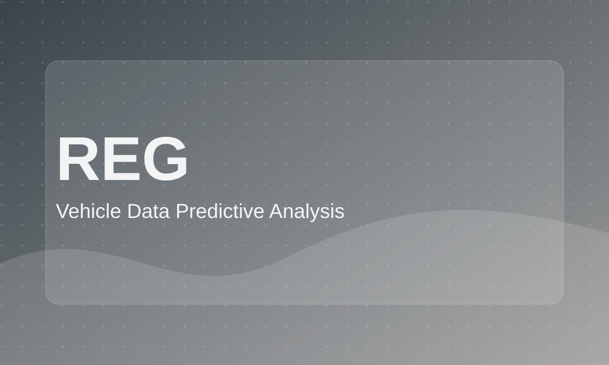

Vehicle Data Predictive Analysis
Statistical modeling case study using vehicle data to explore relationships between variables and predict outcomes.

Role: Data Analyst
Tools: R / Python, statistical modeling, regression, classification
Project Type: Interview case study
Focus: Predictive modeling, statistical analysis, vehicle data
Business Problem
The project explored how vehicle characteristics can be used to predict outcomes such as transmission type or stopping distance.
Goal
Apply a structured analytical workflow to a small dataset and explain the model results clearly.
What I Did
- Explored the dataset structure and variable relationships.
- Performed descriptive analysis and visualization.
- Built predictive models and evaluated model performance.
- Interpreted results in a technical report and concise presentation.
Key Analysis / Visuals
- Variable distribution charts
- Correlation plots
- Regression or classification summary
- Prediction vs actual comparison
Outcome / Recommendations
Delivered a technical analysis explaining which variables were most useful for prediction and how the model performed on the selected task.